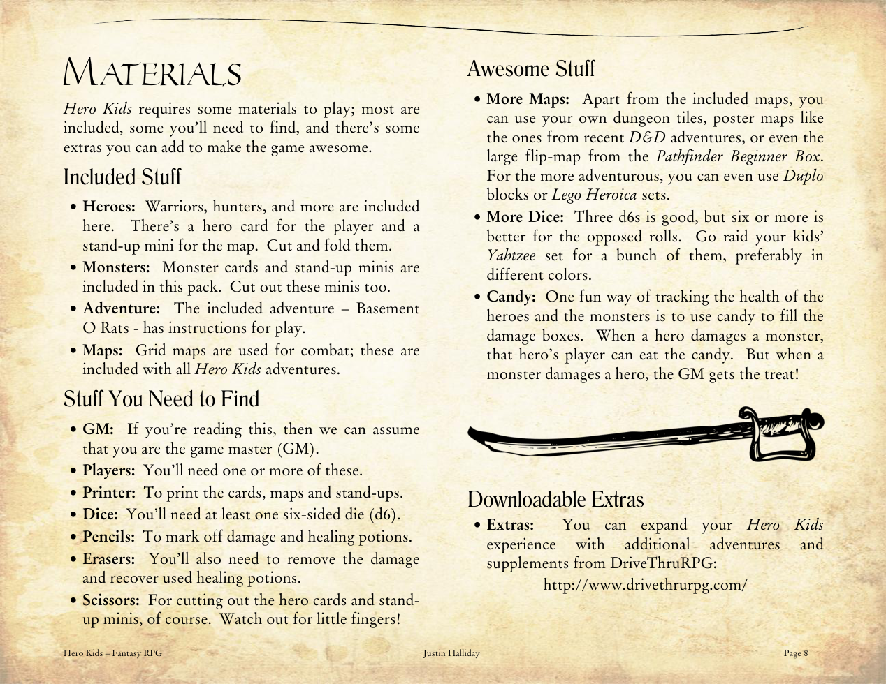

Что нужно найти
- Ведущий (GM): если вы это читаете — поздравляем, вы ведущий.
- Игроки: нужен хотя бы один (а лучше больше).
- Принтер: чтобы распечатать карты, карточки и фигурки.
- Кубики: хотя бы один шестигранный кубик (d6), но лучше несколько.
- Карандаши: для отметок урона и использованных зелий.
- Ластики: чтобы стирать отметки и восстанавливать здоровье и предметы.
- Ножницы: для вырезания карточек и фигурок. Осторожнее с маленькими пальчиками!